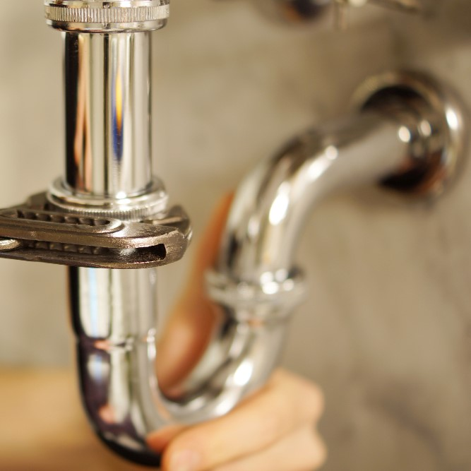
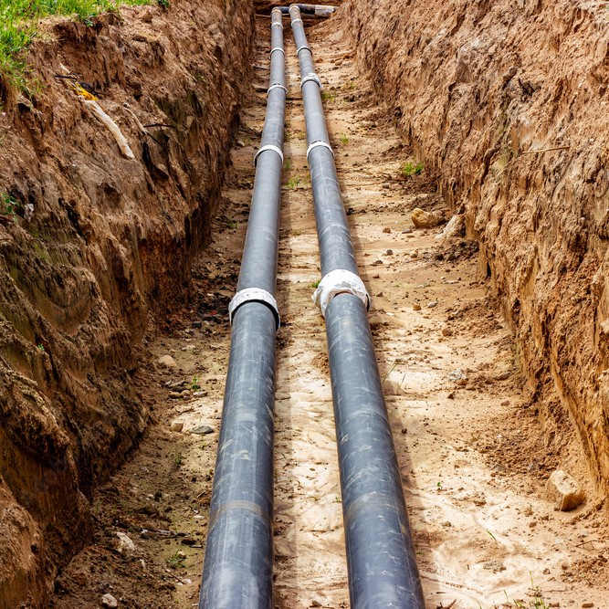
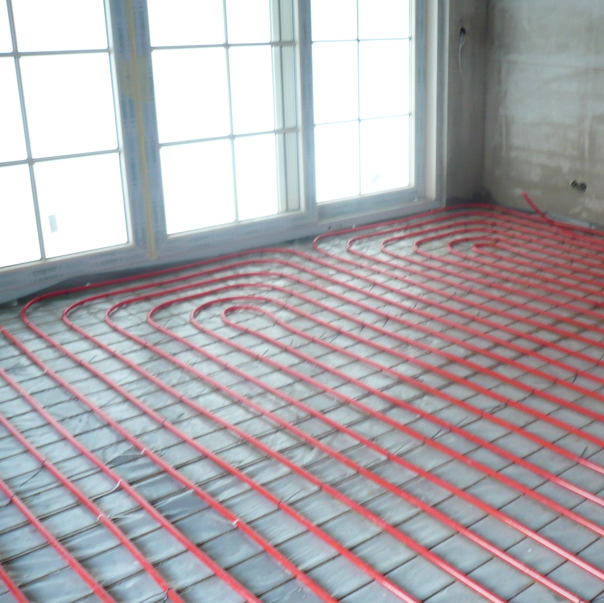
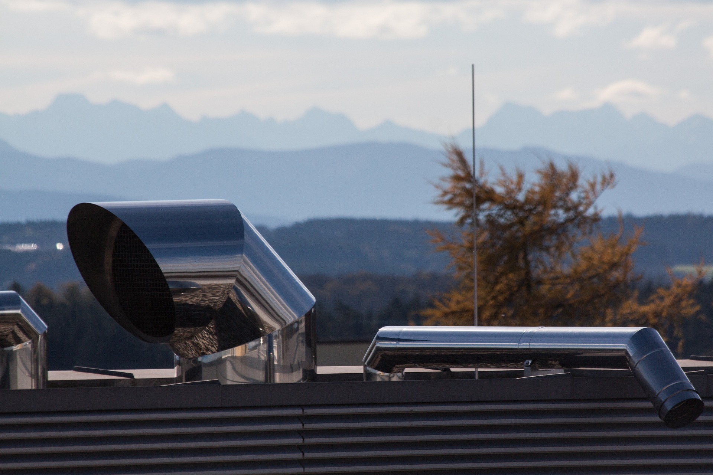
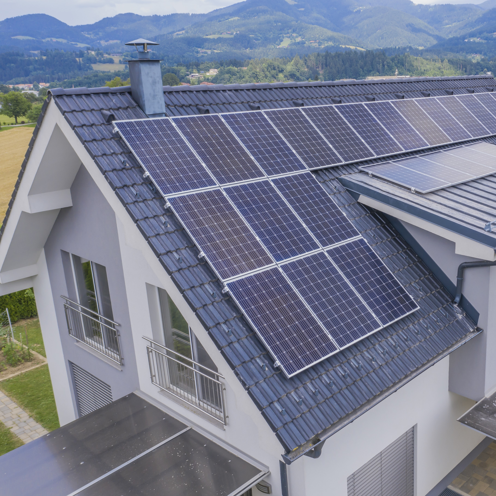
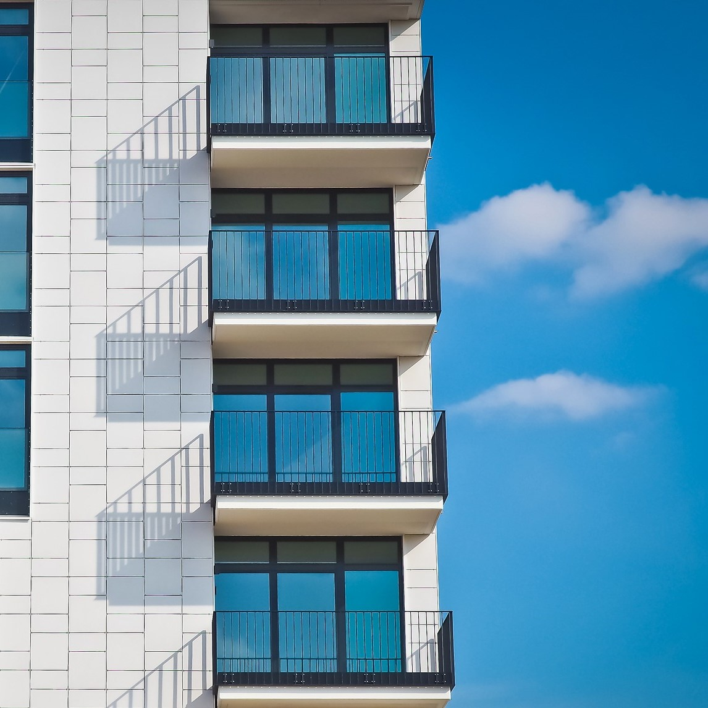

Szolgáltatásaink

Vízvezeték szerelés.

Csatorna/közmű építés, esővíz elvezetés és szikkasztó rendszerek.

Köszponti fűtés szerelés: kazánházak, felületfűtések padló/ fal/ mennyezetfűtés.

Gázvezeték szerelés

Légtechnikai szellőzés és légkezelő rendszerek kivitelezése.

Klímaszerelés, vizes és gázos hűtőberendezések telepítése különböző beltériegységek szerelése.

Napkollektoros és hőszívattyús rendszerek szerelése
Ipari technológiai rendszerek szerelése, karbantartása és felügyelete.
